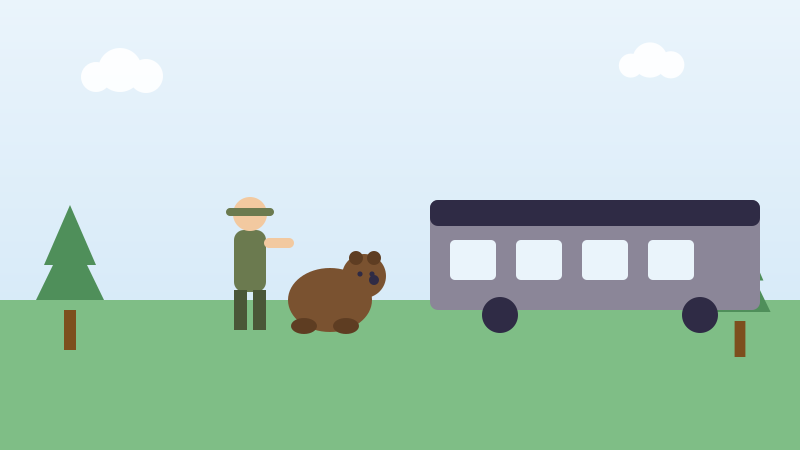

🧸 Pour les enfants
L'ourse de Winnipeg devenue Winnie l'ourson
L'ours le plus célèbre du monde a vraiment existé, et il venait du Canada.

En août 1914, un jeune homme nommé Harry Colebourn était dans un train. Il était vétérinaire à Winnipeg et il partait vers l'est avec son régiment, le Fort Garry Horse.
Le train s'est arrêté dans un petit village appelé White River, en Ontario. Sur le quai, Harry a vu un homme avec un ourson noir. Il a acheté l'ourson pour vingt dollars. C'était le 24 août 1914.
Il l'a appelée Winnie, en souvenir de Winnipeg, sa ville. Winnie a suivi les soldats jusqu'en Angleterre, de l'autre côté de l'océan. Elle suivait Harry partout comme un petit chien.
Quand Harry a dû partir pour la France, il a emmené Winnie au zoo de Londres. C'était en décembre 1914. Il voulait revenir la chercher, mais Winnie était si douce et si aimée qu'il l'a laissée là pour de bon.
Dix ans plus tard, un petit garçon nommé Christopher Robin a visité le zoo. On lui a permis d'entrer et de la nourrir. Il l'aimait tellement qu'il a donné un nouveau nom à son ourson en peluche : Winnie.
Son père était écrivain. En 1926, il a publié un livre sur cet ourson en peluche. Le livre s'appelait Winnie l'ourson, et les enfants le lisent encore aujourd'hui.
Essaie maintenant trois questions
Pas de chronomètre et aucune note à craindre. Chaque réponse t'explique pourquoi.
← Toutes les histoires pour enfants
À propos de ce quiz
Cette histoire raconte comment une ourse achetée dans une gare de White River, en Ontario, en 1914, s'est retrouvée au zoo de Londres et a donné son nom au plus célèbre ourson en peluche du monde.
Elle est écrite en phrases courtes pour les enfants de six à neuf ans, avec une image dessinée pour ce site et trois questions à la fin. Touchez le bouton de lecture à voix haute et la page lira les questions à haute voix.
À découvrir aussi
D'autres histoires vraies du Canada pour les enfants